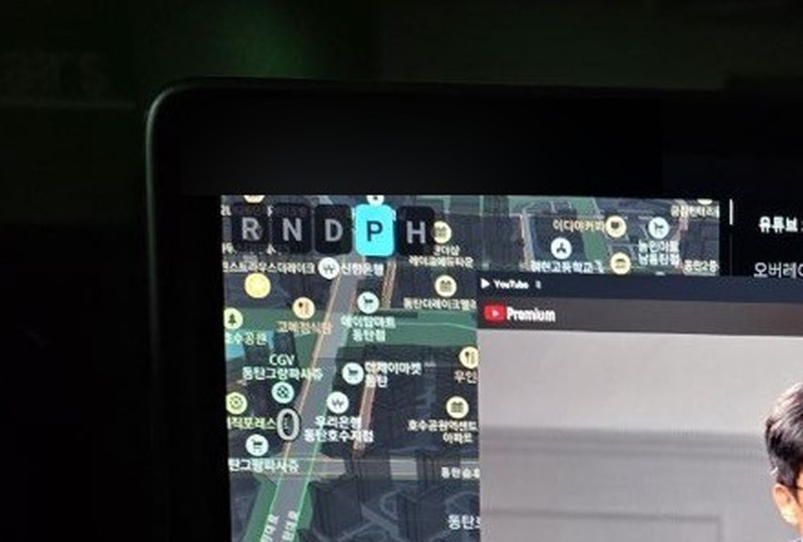
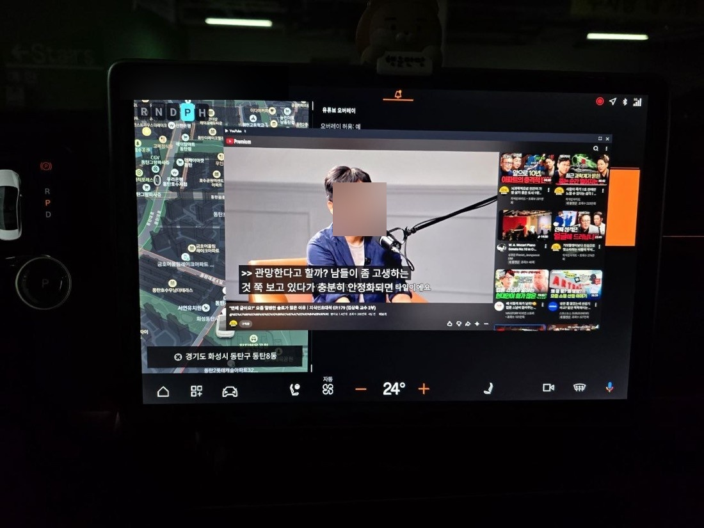

🧭 Gear Overlay
A small overlay app that shows the current gear (R/N/D/P) large in the corner of the screen.
What is this app?
On the Polestar 4, the gear is easy to miss on the instrument cluster. This app shows what gear you're in right now and the auto-hold (H) state in a small window that always floats on top of the screen. It also plays a chime when you shift.
Key features
- Gear display: R · N · D · P (+ H = auto-hold)
- Shift alert: a chime when you change gears (with a sound of your choosing)
- Auto-hold (H): shows H (bright yellow) for the state where the car stays put even after you release the brake
- Window move (drag) · pinch to resize · size remembered
How to use
- Launch the app → check that the permission (overlay) is allowed → Turn on overlay
- Drag the header to move it wherever you want
- Spread or pinch with two fingers to resize
Technical notes
- Vehicle data is read via the reflection Car API by querying
GEAR_SELECTION(raw 1=N 2=R 4=P 8=D) - Because the standard API has no auto-hold property, H is synthesized from wheels stopped + D/R
- Forces the y position so the overlay window isn't covered by the car's top status bar
Screenshots


💬 댓글